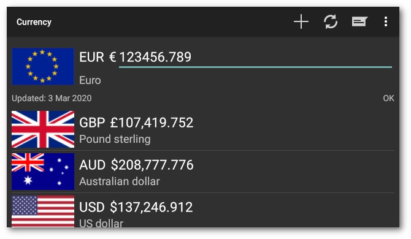
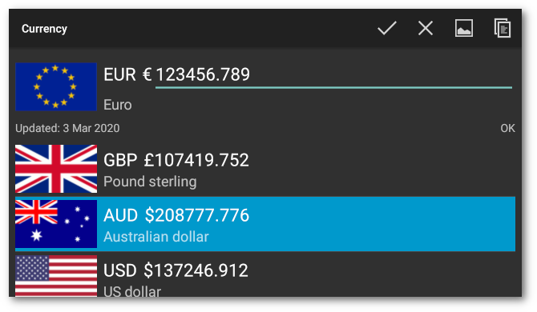

Introduction
Currency is an app for currency conversion and keeping track of your selection of currencies.


Features
- Currency rates from the European Central Bank
- 32 international currencies
- Currency rates updated daily
- Last rate update retained for use offline
- Extra currency for unsupported currencies
- Ukrainian, German, Italian, French, Spanish, Indonesian and Russian translation
Using

Edit
Touch the current currency value field to edit the value. The display will be updated dynamically as you type. Touch the Done button on the numeric keypad to update the value field. The whole value field is selected by default when touched so it will be overwritten by typing in a new value. To deselect the text, touch an adjacent area, like the currency flag.
Toolbar
The icons in the toolbar are:
- Add a currency to the list. A scrollable list of currencies will pop up. Touch an entry to add it or touch the Cancel button below the list. Long touch an entry to select it. Once one currency is selected others may be added or removed from the selection by touching them. Another long touch on another currency will clear the list and select the new currency. Touch the Clear button to clear the selection. Touch the Select button to add the selection. The entries will be added to the list in the order selected.
- Refresh Get the day’s currency rates from the ECB. The date shown on the left above the currency list will be updated if new rates are available. It may show the previous day because the rates are updated at around 14:15 CET. The status display on the right above the currency list will show ‘OK’, ‘No Connection’, ‘No WiFi’ or ‘Roaming’ according to the update settings. It may show ‘Failed’ if the connection times out or fails to connect.
- Update Update the currency rate for the extra currency against the Euro. A dialog will pop up with the current extra currency rate. Update the value and touch the OK button. The display will refresh if the extra currency is displayed.
- Help Display help text.
- Settings Display the settings screen.
Edit Currency List

Touch a currency entry in the list to make it current. The old current currency will move to the top of the list. Long touch a currency entry to select it. Once one currency is selected others may be added or removed from the selection by touching them. Another long touch on another currency will clear the list and select the new currency. The icons in the toolbar will change to:
- Clear the selection.
- Remove the selected currencies.
- Chart Display a chart of selected currencies. If one is selected, the chart will be of the current currency and the selected currency. If more than one currency is selected the chart will be of the last two selected currencies. Selecting the extra currency will produce a blank chart.
- Copy selection value to clipboard. Only one value will be copied.
Chart

The display shows an interactive chart of the last 90 days of historical rates from the ECB. The chart responds to two finger pinch and expand gestures and will scroll once expanded. The toolbar icons from left to right are:
- Invert the chart.
- New chart The scrollable list of currencies will pop up. Select one or two currencies from the list as above to replace the current currencies in the chart.
- Refresh the chart.

- Historical The chart will be updated with nearly eighteen years of historical data currently dating from 1 January 1999. Not all the currencies go back this far. Caution – this will take a while, depending on the connection, and will download more than 6Mb of data.
- Range Change the chart range. The chart will show the latest
data, but will scroll back. Note – ranges greater than a
quarter will have no effect unless the chart is updated with the
historical data.
- Week – One week
- Month – One month
- Quarter – Three months
- Year – One year
- 5 Years – 5 Years
- Max – Maximum current range
Settings


Settings
Update
- WiFi Update while connected on WiFi only
- Roaming Update while roaming
Numbers
- Fraction digits Select the number of digits to display after the decimal point. A popup list of options will be displayed.
Chart
- Fill Fill the chart trace.
Theme
- Dark Use dark theme
About
- About Display the version, copyright and licence.